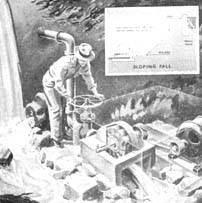
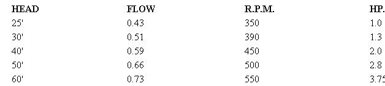
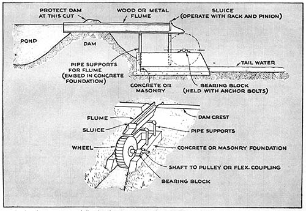

REPRINTED COURTESY OF POPULAR SCIENCE MONTHLY/ 1947 POPULAR SCIENCE PUBLISHING CO., INC.
$6.00 A YEAR 112 ISSUES /SUBSCRIPTION DEPARTMENT, P. O. BOX 2874, BOULDER, COLORADO 80302
Though one of man's oldest prime movers, a water wheel is still a fascinating piece of machinery. Perhaps this is because it appears comprehensible at a glance (although an efficient wheel is actually a product of subtle and inconspicuous design refinements), and because it seems to be a way of getting power for nothing. The homemade wheel described here was especially designed for this series on harnessing small streams (see MOTHER NO. 13, pages 23-33), and will reward a careful craftsman by delivering years of constant service. It's particularly suited for an installation having a moderate head (25' to 60') and relatively small flow (.45 to .75 cubic feet per second). Subsequent installments will describe the con struction of wheels suited for lesser heads of water and other varied conditions.
As is apparent from the drawings, this is an impulse wheel, driven by the impulses produced as water strikes revolving blades or buckets. In a perfectly designed wheel, the water strikes at high speed, exhausts its energy in driving the wheel to which the bucket is attached, and then falls free of the wheel.
Known as a Pelton wheel, this type developed from the "hurdy gurdy", a paddle wheel used in California by the forty-niners. The hurdy-gurdy was a wheel that rotated in a vertical plane, had flat vanes fixed around its circumference, and was driven by the force of water striking the vanes. It was not an efficient machine, but it was simple to construct. Then an engineer named Lester Pelton substituted a cup-shaped, divided bucket for each of the vanes, and by that step added a high degree of efficiency to the wheel's other virtues.
No single wheel will meet all operating requirements, but some will perform under a reasonably wide range of conditions. The following table indicates the r.p.m. and horsepower output that will be delivered by this wheel under given conditions of head and flow. The latter is measured in cubic feet per second:
Thus, if a survey of your stream indicates a head and flow close to these values, this Pelton wheel will fit neatly into your plans.
Strictly speaking a water wheel is an engine powered by water, just as an automobile engine is powered by gasoline. The important power-producing elements of the wheel are the buckets and the nozzle, and considerable care should be exercised to see that these parts are made correctly. The nozzle meters the correct amount of water to the wheel, and forms and directs the jet against the buckets. Both the inside diameter and the location of the nozzle with respect to the wheel are very important, since the jet must impinge upon each bucket at the correct wheel radius or lever arm. It must also be divided equally by the center ridge of each bucket.
The function of the bucket is to convert the energy of the jet, represented by its high speed, into mechanical energy at the wheel shaft. To do this it must slow the water from its high speed in the jet to practically zero speed when it drops into the tail water. Maximum efficiency with this wheel will be obtained if the buckets have the form and size shown in the drawing. This shape acts to slow the jet by turning it smoothly through 180 deg. The surface of each bucket must be as smooth as possible. A mirror finish is desirable on the inside, and even the back of each bucket should be ground and polished to minimize spray.
Important also is the correct orientation of the bucket to the jet. When the full jet strikes, the bucket should be perpendicular to it. Both the nozzle and the buckets will wear under the action of the high-speed water, at a rate determined by the silt content and should therefore be made easily removable for replacement.
Above all, buckets must be uniform. If you can get access to a metal-cutting handsaw, cut the blanks according to a single pattern. This pattern can be shaped so as to form the end bevels automatically when the blanks are bent, and the bending itself can be done in a jig or hammering form. This jig may be made of a piece of pipe of about 2" outside diameter mounted in hardwood endplates. Also provide a holding fixture that will slide in the table groove of the handsaw to assure that the slots for the end lugs are cut and spaced uniformly. A holding jig should also be made to line up the lugs and buckets for welding. On completion, balance the wheel by laying weld beads along the backs of any light buckets. Beads should be laid carefully and ground smooth.
Ball bearings may be employed, but are not necessary since the wheel turns at comparatively low speeds. If the builder prefers to use plain bearings, it will simplify machining the shaft, which should present a shoulder to the inside of the bearing so that the wheel may be positioned. If plain bearings are employed, babbitted linings are satisfactory, provided provision is made for proper lubrication.
One vital job that the foundation must do is hold the wheel and the nozzle in correct relative positions. It should be placed on firm ground or piling so that it will not settle unevenly, and must, of course, take advantage of all the head possible. The penstock from the dam should have easy access to the nozzle, and the tail water easy escape to the stream. If possible use 4" or larger pipe for the penstock and lay it out to hold frictional losses to a minimum. The width of the foundation is such as to allow the water to fly clear of the buckets. The removable cover over the upper half of the wheel may fit more closely, since no water sprays from the buckets through this half of the revolution.
The foundation may be made of such materials as timbers in a framework, masonry, or concrete, so long as it fulfills the above requirements. The wheel and the machinery being driven may then be housed in any suitable, inexpensive shed.
It's not wise to dispense with a gate valve, which is used to cut off or to throttle the water supply to the wheel. Since a gate valve cannot be operated rapidly, it is the best type, eliminating the risk of dangerous water hammer in the penstock. It is also well suited for throttling because fine adjustment is obtainable through the long operating screw. In throttling, the gate valve should be used together with a tachometer or revolution counter connected to the wheel shaft to secure the optimum speed and horsepower for the stream condition and load. Either fasten a tachometer permanently to the shaft, or keep a revolution counter handy in the wheel shed.
Generally the head and volume of water flowing to the wheel will remain constant, resulting in a constant output. If the machinery driven by the wheel has a level power demand there will be little need for constant adjustment of the valve.
The requisite piping, pipe fittings, steel sheet and rod bolts and nuts, and gaskets are available at building-supply houses houses or steel distributors. Machine screws, lock nuts bearings, and the like may be purchased from good-sized hardware distrib utors or mail-order houses.
One final point to keep in mind in making your calculations: head is defined as the vertical distance between the water surface behind the dam and the tail-water surface at the wheel. For an impulse wheel, however, which cannot operate submerged, the available head is measured from headwater to the center line of the nozzle. As shown in the construction drawing, there is only 5" difference between the two definitions, but this can make some difference in output when working with the moderate heads for which this wheel is designed.
While many details can be altered, the reader should beware of any that will affect operating characteristics. Thus stainless steel buckets and antifriction bearings would improve performance, involving only some extra work in building the wheel. Changes in the nozzle diameter, wheel radius, or effective head, however, should be undertaken only after careful consideration of the probable effect on performance.
Often seen beside a picturesque rural mill, an overshot water wheel possesses two excellent characteristics-considerable mechanical efficiency and easy maintenance. Many have remained in service for decades, and now lend a nostalgic charm to their surroundings.
Operated by gravity, the overshot wheel derives its name from the manner in which water enters the buckets set around its periphery. Pouring from a flume above the wheel, the water shoots into buckets on the down-moving side, overbalancing the empty ones opposite and keeping the wheel in slow rotation.
Since such a wheel may be located near but not actually in the stream, it offers endless landscaping possibilities for a country home where a stream with sufficient flow is available. If a site on dry ground is chosen, the foundation may be constructed dry and the water led to the wheel and a tailrace excavated. With very little effort, the scene may be turned into an attractive garden spot, the wheel becoming both a landscaping feature and a source of power.
It should be noted, however, that an overshot wheel is practical only for a small-capacity output. How much power it will produce depends upon the weight of water the buckets hold and its radius, or lever arm. Expressed in another way, the output depends upon the weight of water transported and the height, or head, through which it falls while in the buckets. For maximum efficiency, the wheel must use the weight of the water through as much of the head as possible. Therefore, the buckets should not spill or sling water until very near tail water.
Power Increases with Width
Although of simple construction, an overshot wheel is cumbersome in size. For this reason, before attempting to build one be certain you have the facilities to move and lift it into place when completed. Also allow yourself plenty of working floor space. It must be understood, too, that such a wheel is a sizeable project and requires a lot of material and time. Extreme care in cutting and assembling the parts is not essential, however, because the wheel, operating at slow speed, need not be accurately balanced.
Accompanying this article are drawings that illustrate the construction of a small wheel suitable for a water head of 6' 3". The wheel itself has a diameter of 5', leaving a flume head of 15" to propel the water into the buckets. As shown in the table at the bottom of page 31, you may build the wheel to give a power output ranging from 1/2 hp. to 1 hp. at 10 r.p.m. All dimensions remain the same except the width, the horsepower increasing as this is increased. For 1/2 hp., the wheel should be 15-31/32" wide. For 1 hp., it should be 31-29/32". Before deciding on the wheel size, you'll want to make a survey of the power available in the stream (PSM, April and May '47).
Virtually all large wheels are built with wood or steel arms, as in the drawing below, and have a shroud plate only around the outer edge, but you may find it simpler and more satisfactory to build the drum-type wheel described here. In this case, each shroud plate is a disk of 1/8" sheet steel. Each disk is braced by a 1/8" sheet steel sole plate to which it is continuously welded, by the buckets, by one of the two large diameter 1/4" steel hub flanges to which it also is continuously welded, and by the long hub itself.
Large Sheet Required
If preferred, the shroud plates may be made of wood. If so, care should be taken to bolt them securely to the hub flanges. Bushings pressed into the wood for the bolts will give the wheel a longer life expectancy.
Sheet steel for the disks may be ordered direct from several large steel companies in case your local supply house is unable to furnish it. Ordinarily, such steel comes in standard 48" widths, so you may have to weld together two or more sheets to get the required 5' diameter, using either a butt weld or a backing plate. This will produce some distortion or ripple, as will the welding on of the numerous clips required. So long as distortion is local, however, and the main lines of wheel and shaft remain true, this will do no harm.
After the sheet has been prepared, scribe a 5' circle on it and cut it with the cutting flame of a gas welding torch. With ordinary care, this method should give sufficient accuracy. Vent and drainage holes should be drilled as indicated around each disk to lessen corrosion with the drum.
Good Buckets ImportantThe buckets are the most important element of the wheel. To give maximum efficiency, they must be formed so that the water enters smoothly at the top of their travel and remains in them until just before they reach the bottom. For this reason, the bucket form indicated on the facing page should be followed faithfully. Either sheet metal or wood is an acceptable material, but metal is better suited to cold climates, since wood is damaged when absorbed water freezes. Because the buckets are subject to wear from the water and sediment that it carries along, you may want to install them so they can be easily replaced.
In laying out and making wooden buckets, follow these steps:
Using a common center, strike off two arcs, one with a 21-1/2" radius and the other with a 2' 6" radius. Then draw a radius line intersecting these arcs.
From the point where the radius crosses the inner arc, measure 2-3/4" farther along the line and mark the point E .
From the point where the radius crosses the outer arc, draw a chord 10-1/2" long and from the new point where this intersects the outer arc draw a line to point E . You now have the inner trace of the bucket.
Take a piece of the bucket stock and lay it along the upper edge of this inner trace, and you have a cross section through the bucked, Cut your stock accordingly, making the length equal to B in the table of dimensions.Steel Buckets Require Jig
Steel buckets are only slightly more difficult if you follow these steps:
Using a common center, strike off two arcs on a piece of plywood, one with a 21-1/2" radius and the other with a 2' 6" radius.
Draw a radius line and then a tangent to the inner arc, making it vertical to the radius. From the point of tangency, measure 5" along the tangent. Mark this point.
Using this mark as a center, strike off an arc with a 5" radius. This is part of the inner trace of the bucket.
At the point where the original radius line (Step 2) crosses the outer arc, draw a chord 10-1/2" long, and at point F where this chord intersects the outer arc draw a new radius line. Also at point F measure off 15 deg. below the new radius and draw line FG 11-1/2" long.
Then, using G as a center, strike an arc with a 11-1/2" radius. This forms the rest of the inner trace of the bucket.
Cut the plywood along this line and along the lines that form a quarter ellipse. Using this as a pattern, cut several more quarter ellipses from scrap. Nail these to stretchers to make a bending jig around which the buckets may be formed.
Weld Wheel Parts
Welding of the various parts of the wheel produces an exceptionally strong construction. After getting together or making all the required parts, begin the assembly by welding four clips to each end of the hub sleeve. Then weld the required number of clips to the shroud plates for the sole plate, and weld the shroud plates to the clips on the hub sleeve. After welding both hub flanges to the shroud plates and the sleeve with a continuous weld, attach the sole plate to the clips on the shroud plates with No. 8 self-tapping screws. Also weld the sole plate to the shroud plates with a continuous weld, and the bucket-support angles to the sole plate.
Attach wooden buckets to the supports with 3/4" No. 10 roundhead wood screws, and then drill holes 2" from center to center through the shroud plates for 1-3/4" No. 10 roundhead wood screws. If you use steel buckets, rivet or screw 10 clips to each side of each bucket and attach the buckets to the angles with No. 8 self-tapping screws. Then drill holes through the shroud plates in the way of the clips for the same type of screws.
Lubricate Bearings Well
Using locknuts and washers, fasten the hub sleeve to the shaft with two 3/8" by 4-1/2" bolts, placed at right angles to each other. Two bearing mountings having 2-3/8" renewable liners with shoulders should be bolted to the foundation. Place shims about 1/4"thick under the bearings.
Standard bearing mountings, variously called pedestals or blocks, may be bought complete with wick oiler or cup oil reservoir and with built-in self-aligning features. Standard bronze bearing metal liners or inserts likewise may be bought from any machine component supplier. Babbitt liners are equally satisfactory.
Although the wheel turns slowly, it is heavy and will be running almost constantly, so good lubrication of the bearings is essential. To this end, care should be taken to insure that the bearing liners are finished to the correct fit. Porous inserts or inserts containing graphite are excellent for this application, but may cost more than regular bearing inserts.
It is important that the foundation be carried deep enough so that water falling from the buckets will not undermine it. Avoid a long flume if possible, in order to keep the construction as simple as possible. Strengthen it along its entire length with an exterior frame and support it well from dam to wheel with pipe uprights.Sluice Governs Wheel
The sluice gate may be located at any convenient place along the flume. Since it is the governing mechanism of the wheel, its installation should be anything but slipshod. If it is installed at an angle as on the following page, water pressure will keep it at any desired position. If installed vertically, some mechanism, such as a rack and pinion, should be provided to keep it in place.
Adjust the sluice so that the buckets will run one-quarter full. This will give a wheel speed of 10 r.p.m. If the buckets are allowed to run more than one-quarter full, the efficiency of the wheel will drop for two reasons. Because of the increased speed, centrifugal force will throw water from the buckets. They also will begin to spill before approaching tail water. Although this practice does waste water, it may be profitably employed during a freshet to increase the power output, for at such times the excess water would be wasted anyway.
|
Gravity turns the overshot wheel. (See page 28). Water-carrying buckets on one side overbalance the empty ones opposite |
 While the penstock may be set up to provide either a precipitous or sloping fall, it should be of as large a diameter as possible, have minimum bends. and hold down flow friction to the least amount. |
 Dramatic contrast in wheel sizes. Top, a 25-ton job designed for installation in a 30,000-hp. unit. It turns at 171 r.p.m. and has a 1,008' head. Below, a 12"" wheel with reducer and gatevalve throttle. |
|
As the headwater rises or falls, the sluice gate may be adjusted to meter the correct flow to the wheel. |
For highest efficiency, the buckets must carry their load almost to tail water before beginning to spill. |
Increasing the width of the wheel will boost its horsepower output. All other dimensions remain the same. |
|
 |
|
|